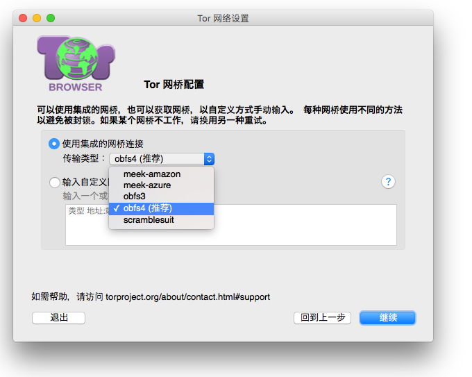

规避
有时候您的网络服务供应商（ISP）或政府单位会过滤阻挡通往洋葱路由网络的连接，因此 Tor 浏览器有内置一些能够绕过这类过滤机制的规避工具，它们通常叫作“可插拔传输层”，您可以参考此网页可插拔传输层以获取更多关于各种目前可以使用的规避工具。
使用可插拔传输
-

为使用可插拔传输，在您初次运行 Tor 浏览器时点击 Tor 启动器窗口中的“配置”。
您也可以在 Tor 浏览器运行时配置可插拔传输，只需点击地址栏附近的绿色洋葱并选择“Tor 网络设置”。
在询问您的互联网服务提供商 (ISP) 是否封锁了 Tor 网络连接时选择“是”。
-

选择“使用集成的网桥连接”，目前 Tor 浏览器有提供六个可插拔传输层供您选择。
我应该使用哪种传输？
在洋葱路由启动器中所罗列的可插拔传输层，其运作原理各不相同（请参考 可插拔传输层以了解更多相关信息），且产生的效果也会视您的的实际情况而定。
If you are trying to circumvent a blocked connection for the first time, you should try the different transports: obfs3, obfs4, ScrambleSuit, fte, meek-azure and Snowflake.
如果您试过了上述的全部选项后还是不能上网，那就得手动输入网桥地址了。请参考网桥部分以进一步了解网桥的运作原理与获取方式。